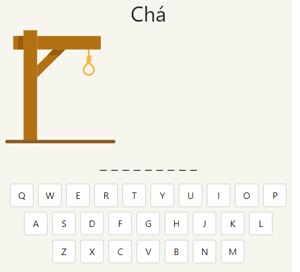

Jogo da Forca
Desafie-se tentando descobrir qual é a palavra oculta antes que esgotem as suas tentativas.
Uma nova palavra, de um tema diferente, é adicionada a cada hora.

Como jogar
- A palavra oculta está relacionada com a dica "Chá";
- O tamanho da palavra oculta (quantidade de letras) está representado pelos traços;
- Clique em uma das letras. Se a letra existir na palavra, a letra será exibida. Caso contrário, seu bonequinho ficará cada vez mais preso;
- A cada erro uma parte do corpo do bonequinho é desenhada: cabeça, tronco, braço direito, braço esquerdo, perna direita e perna esquerda;
- O objetivo é descobrir a palavra oculta antes que o bonequinho fique completamente desenhado.
Dicas para o Jogo da Forca
Comece pelas vogais: a, e, i, o, u;
Outra boa estratégia é chutar as letras de acordo com a frequência que elas aparecem no idioma. No caso do português, as letras a seguir são as mais frequentes: a, e, o, s, r, i, d, m, n.
Jogo da Forca por Categoria
Você também pode jogar Jogo da Forca por categoria, no qual cada tema conta com uma quantidade de palavras disponíveis para ser jogada. A cada jogo há uma palavra diferente.